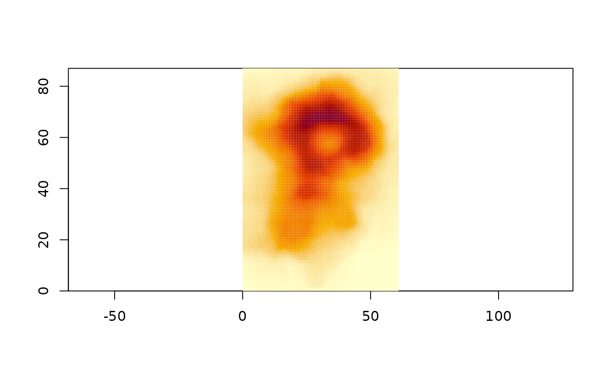
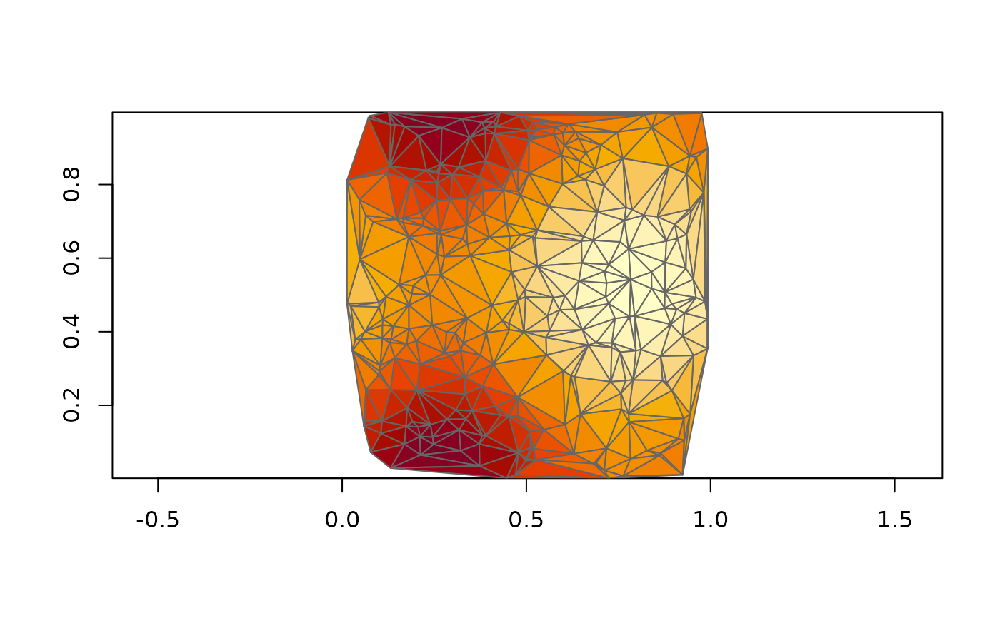
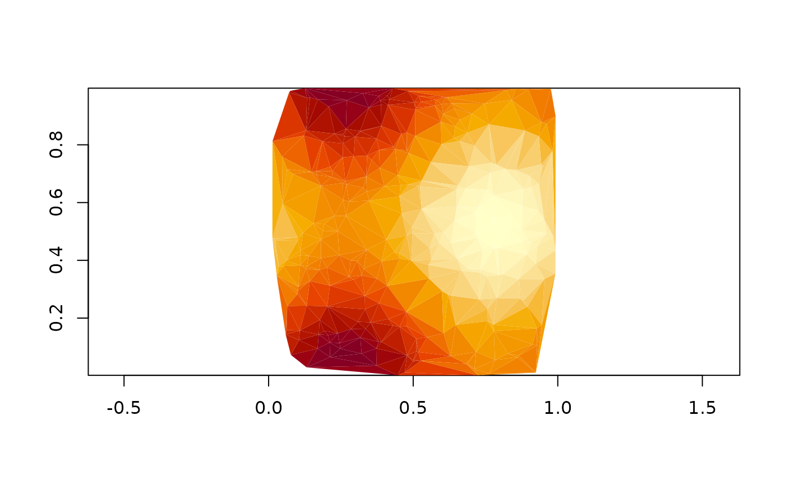

Draw the faces of a mesh, filled by a value on its vertices or faces, with
the same colour mapping as ximage() ('col', 'breaks', 'zlim', 'alpha',
'na.col'), so a mesh and an image can share a colour scale.
Usage
xmesh(
x,
value = NULL,
index = NULL,
add = FALSE,
...,
col = hcl.colors(96, "YlOrRd", rev = TRUE),
breaks = NULL,
zlim = NULL,
alpha = NULL,
na.col = "transparent",
border = NULL,
method = c("polygon", "raster"),
segments = FALSE,
dimension = NULL,
xlab = NULL,
ylab = NULL
)Arguments
- x
a mesh, see Details
- value
values to fill by, see Details
- index
faces when
xis bare vertices, a matrix of 3 (triangles) or 4 (quads) columns of 1-based vertex indices- add
add to plot, or start afresh
- ...
passed to plot when
add = FALSE- col
colours to map single-band data to
- breaks
a set of finite numeric breakpoints for the colours, one more break than colour (if not, colours are interpolated to fit)
- zlim
optional, absolute range of data to map colours to (maintains comparable colours across plots); values outside display as 'na.col'; single-band numeric data only
- alpha
optional constant opacity in
[0, 1](or vector/matrix, recycled) applied on top of any existing alpha channel; not supported for nativeRaster input- na.col
colour for missing values, default "transparent"
- border
outline colour of the faces, default none when filled and the foreground colour when not
- method
"polygon" (default) or "raster", see Details
- segments
draw the mesh's constraint edges (cdtr
S, laridaesegments),TRUEor a colour- dimension
for
method = "raster", the pixel grid (ncol, nrow), default is the plot region's size on the device- xlab
x axis label, empty by default
- ylab
y axis label, empty by default
Value
invisibly, a list with 'vertices', 'faces', 'col' (face colours, or the colour matrix drawn by the "raster" method) and 'zlim'
Details
A mesh is vertices (x, y), faces (triangles or quads, 1-based vertex indices) and optionally values. These inputs are recognised by their structure, no extra packages are needed to draw them:
cdtr::cdt_triangulate()output (and RTriangle):P,T, with per-vertex attributesPAand per-triangledepth, and constraint edgesSlaridae::lari_triangulate()orlaridae::lari_tables()output:vertices(x, y and attribute columns),triangles(v0, v1, v2, depth) andsegments(a livelaridae_meshhandle is drawn withxmesh(laridae::lari_tables(m)))rgl 'mesh3d' objects (from quadmesh, anglr, textures):
vb,it,ib, withmaterial$colorand the z coordinate as valuesvertices as a two-column matrix, a data frame with x and y, or
list(x, y), with faces inindex(3 or 4 columns)
value can be a vector with one value per vertex or one per face (when
the counts are equal it is taken per vertex), the name of a vertex or face
attribute (e.g. "depth" for cdtr and laridae, and "x" and "y" for any
mesh), colours, or a single fill colour. With no value the mesh is drawn as outlines.
The "polygon" method draws every face as a polygon in one call, vertex
values are averaged to their faces (flat shading). The "raster" method
locates each pixel centre of the plot in the mesh and interpolates vertex
values linearly across its triangle (quads are split in two), then draws
the result with ximage(): smooth shading, and the cost is in pixels
not faces, so it suits big meshes. Face values are constant on each face,
pixels outside the mesh are 'na.col'. It needs the cdtr package (>= 0.2.0,
for cdtr::cdt_locate()), and falls back to "polygon" with a message.
Faces with a vertex that is not finite are dropped, so a projected mesh
can mark vertices that fail (or faces to remove, such as those crossing
the dateline) with NA.
Examples
## a quad mesh of volcano's cells, as bare vertices and index
nr <- nrow(volcano); nc <- ncol(volcano)
xy <- cbind(rep(0:nc, each = nr + 1), rep(nr:0, nc + 1))
i <- rep(seq_len(nc), each = nr); j <- rep(seq_len(nr), nc)
quads <- cbind((i - 1) * (nr + 1) + j, i * (nr + 1) + j,
i * (nr + 1) + j + 1, (i - 1) * (nr + 1) + j + 1)
xmesh(xy, index = quads, value = as.vector(volcano), asp = 1)

## a triangulation, coloured by a per-vertex value
if (requireNamespace("cdtr", quietly = TRUE)) {
set.seed(1)
pts <- cbind(runif(300), runif(300))
tri <- cdtr::cdt_triangulate(pts[, 1], pts[, 2])
z <- sin(tri$P[, 1] * 6) + cos(tri$P[, 2] * 6)
xmesh(tri, value = z, border = "grey40", asp = 1)
xmesh(tri, value = z, method = "raster", asp = 1)
}

#> method = "raster" needs the cdtr package (>= 0.2.0), drawing polygons instead
